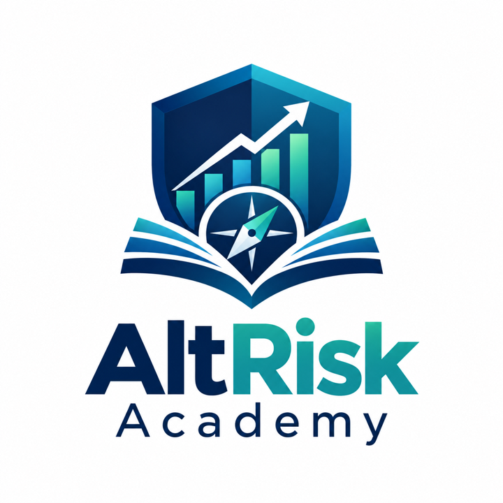

The starting point
An interactive risk simulation
AltRisk began as a software project for exploring alternative investments and comparing different dimensions of financial risk.
From an Interactive Risk Simulator to an Educational Platform
A free, interactive learning experience that helps people build financial literacy, understand risk, and make more responsible decisions.

Founder: Maria MediannikovaAltRisk Academy is an educational initiative for students and other curious learners. It brings financial literacy, risk management, and responsible decision-making together through interactive exploration rather than presenting financial concepts as advice.
Maria's work on the project combines initiative and software development with an educational mission: creating a space where learners can explore ideas, ask questions, and build confidence thinking about financial choices.
AltRisk began as a software project for exploring alternative investments and comparing different dimensions of financial risk.
The idea expanded beyond a single simulator into a wider educational mission: making financial literacy and risk concepts easier to explore and understand.
AltRisk Academy now brings together interactive learning experiences around financial literacy, risk management, and responsible decision-making.
The current Risk Lab is the interactive learning area of AltRisk Academy. It gives learners a place to explore financial and risk-related ideas through hands-on experiences. The labs can evolve over time, so visit the official site for the current collection.
Demonstrations and introductions documenting the evolution of AltRisk and AltRisk Academy.
An interactive educational risk-analysis tool for comparing alternative investments across multiple dimensions of risk.
An overview of AltRisk Academy and the financial technology ideas behind the project.
An introduction to Maria and to AltRisk Academy as a student-led project in financial technology and risk education.
Visit the official AltRisk Academy website for the broader educational experience, or open the Risk Lab to explore its current interactive learning experiences.